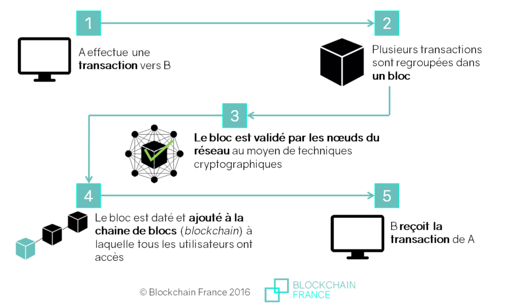
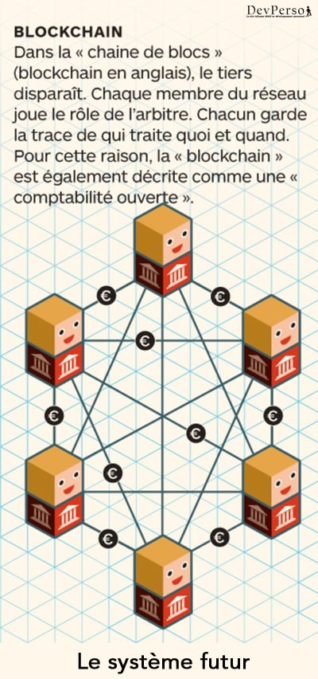

Le contexte
La blockchain existe depuis un long moment, les premières traces d’un système de chaînes de blocs cryptographiquement sécurisé en 1991 par Stuart Haber et W. Scott Stornetta. Mais les premières apparitions datent de 2009 avec la création du Bitcoin par Satoshi Nakamoto. La blockchain est une technique de stockage et de transmission d’informations, transparente, sécurisée, et fonctionnant sans organe central de contrôle (définition de Blockchain France).


En effet cette technologie est très efficace lorsqu’il s’agit de sécuriser des transactions. Elle permet ainsi d’éviter la fraude et de garder une preuve facilement accessible des transactions effectuées. De plus il est impossible d’effacer ou de corriger les transactions précédentes.